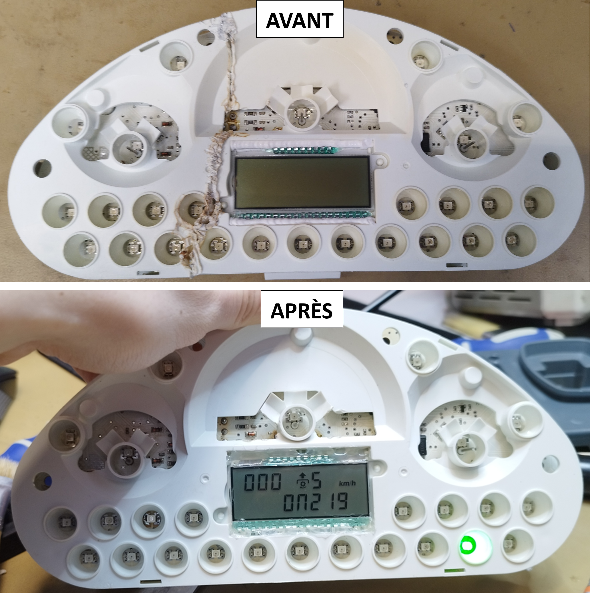

Compétence : Maintenir
Réparation de carte électroniques
Depuis mon stage de deuxième année en BUT au Canada, j'ai acquis des compétences solides en réparation de cartes électroniques, notamment des boîtiers de relevage, tableaux de bord et écrans tactiles. Lors de mon alternance chez BREIZELEC, j'ai réparé des cartes électroniques spécifiques aux tracteurs CLAAS, renforçant ainsi mes compétences en maintenance d’équipements agricoles complexes. J’ai également développé des compétences avancées en brasage CMS, ce qui m’a permis de réaliser des réparations précises et d'assurer la fiabilité des cartes électroniques réparées.

Utilisation de logiciels de diagnostics
Lors de mon alternance chez BREIZELEC, j’ai été amené à utiliser des outils de diagnostic pour assurer la maintenance électronique de tracteurs CLAAS. J’ai notamment travaillé avec les logiciels CDS (Claas Diagnostic System) et MetaDiag, utilisés respectivement pour les générations récentes et plus anciennes de tracteurs. Ces outils permettent de se connecter directement aux boîtiers via la prise diagnostic, afin de détecter rapidement les éventuelles anomalies. Ces logiciels offrent également la possibilité de réaliser des mises à jour logicielles sur les différents modules électroniques embarqués (tableau de bord, transmission, relevage, etc.). Leur utilisation m’a permis de renforcer mes compétences en maintenance préventive et corrective, en m’appuyant sur des procédures professionnelles et des outils métier standards du secteur agricole.